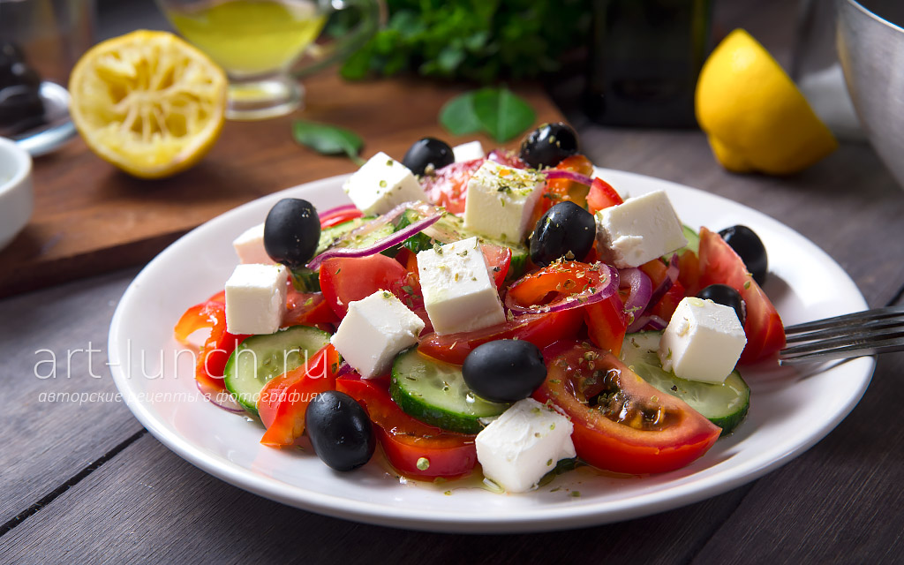

Винегрет с зеленым горошком

Нарядный овощной салат подойдет и для повседневного стола и для праздника.
Цезарь
Этот салат можно готовить по многим рецептам. Я предлагаю салат цезарь с курицей, доступный всем.
Греческий
«Греческий» салат – рецепт лёгкого, вкусного, свежего салата, который прекрасно украсит любой стол.